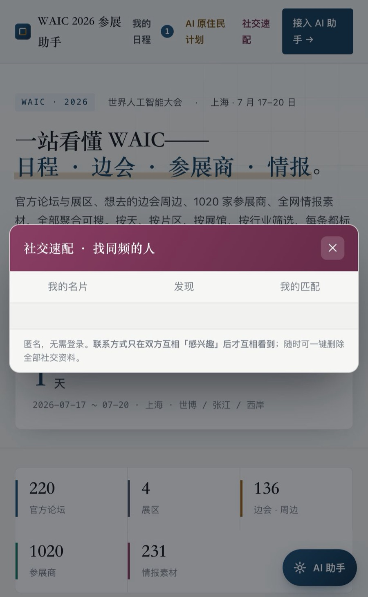
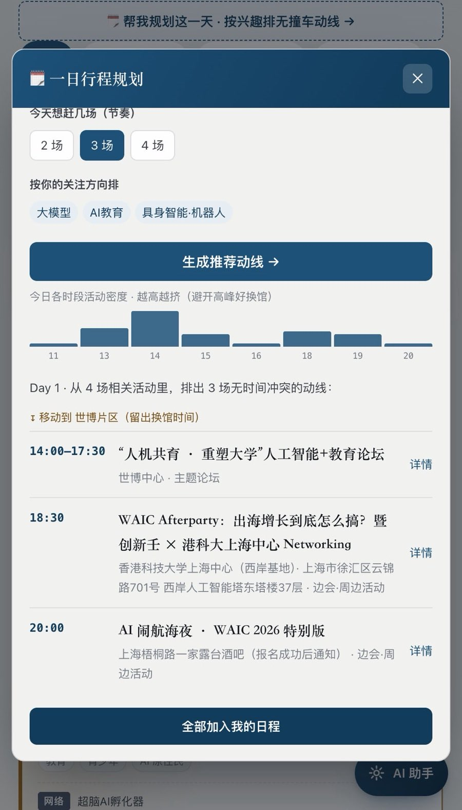
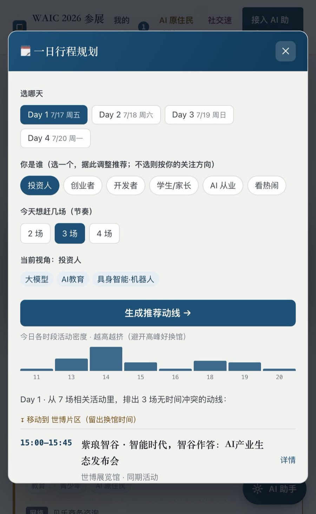

WAIC 逛什么、去哪、怎么排——
一个 AI 参会搭子全搞定。
世界人工智能大会（上海 7/17–20）信息散在官网、公众号、各处边会里。我们把 官方日程 + 边会周边 + 1020 家参展商 + 情报 聚合成一个 免注册、可搜索、AI 可接入 的参会助手——帮你少走弯路，把时间花在值得去的地方。
01 / 一站看全
WAIC 的一切，聚在一处
官方 210 场论坛/活动 + 4 大展区、138 场边会周边、1020 家参展商、231 条情报——四大板块一站浏览。按天、片区、场馆、行业、类别筛选，每条都标明来源，官方 / 非官方一眼分清。免注册，打开就用。

02 / 一键规划
不知道去哪几场？一键排出一天
选一天、选「你是谁」（投资人 / 创业者 / 开发者 / 学生家长…）、选节奏——系统按你的兴趣，排出一条 无时间冲突、少换馆 的推荐动线，还标出今日各时段有多挤（避开高峰好换馆）。一键全部加入日程、导出日历。

03 / 搜得到
搜什么都搜得到，还帮你排优先级
全局搜索横跨官方 + 边会一起搜；「AI教育」自动也能匹配到「人工智能+教育」；连展商的注册名也认得（搜「小红书」找得到「行吟信息科技」）。结果按重要度排序，超脑相关场次置顶高亮。

🤖 AI 助手随便问
「7/18 有哪些大模型论坛」「今晚要报名的 afterparty」「从世博到张江来得及吗」——大白话问，答案带可一键加入日程的卡片。
🔗 跨端同步 · 免登录
我的日程和兴趣存本机，用一个匿名「同步码」就能在手机/电脑、甚至你的 AI agent 之间同步，无需注册。
🧭 现场实用
每个活动一键导航（高德/百度/Apple/Google）；周边指南备好三地四馆交通、入场须知、住宿餐饮。
🫱 找同频的人
人脉对接：按兴趣匹配，联系方式只在双方互相「感兴趣」后才互看，匿名、可一键删除。
🏢 展商自助更新
参展商可认领自家展台、核验后补充简介与官网，标注「商家提供」；官方数据只读不被覆盖。
🧩 装进你的 AI
一条命令把全部日程装进你的 AI 助手（Claude Code / OpenClaw 等），数据与能力都会自动更新。
现在就用，帮你把 WAIC 逛明白
免费 · 免注册 · 打开即用 · AI 可接入
超脑 AI 孵化器 × 王佳梁 AI OPC 工作室 出品 · 数据聚合自 WAIC 官网与公开渠道，非官方发布，一切以大会官方为准。